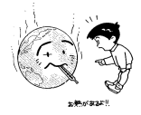
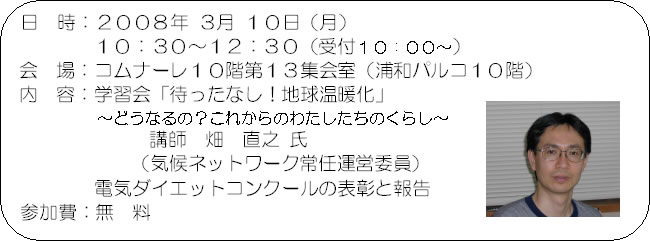

|
～どうなるの？こらからのわたしたちのくらし～
近年、熱波・干ばつ・洪水・台風・氷河の融解など世界各地で地球温暖化の影響ではないかと考えられる異常気象が発生しています。そして防止のために｢1人1日1kg削減（1kgのCO2量とは、サッカーボール100個分の体積に相当)｣等の行動も呼びかけられています。
温暖化の仕組み、その状況や将来の私たちのくらしへの影響、京都議定書とは、そして私たちができることなど一緒に学んでみませんか。
1２月に実施した電気ダイエットコンクールの表彰と報告も兼ねて開催します。

＜講師略歴＞ 1993年より「市民フォーラム2001」（1992年の地球サミット参加者が
つくったNGO）に参加し環境NGOの活動を始める。1997年の地球温暖化防止
京都会議（COP3）に対応したNGOの連合体「気候フォーラム」に参加し常任運営
委員を務める。1998年4月に設立された気候ネットワークでも常任運営委員
（～現在）。他に「自然エネルギー促進法」推進ネットワーク（GEN）運営委員、
など。共著『よくわかる地球温暖化問題（改訂版）』（中央法規出版、2002年）、
同『地球温暖化防止の市民戦略』（同、2005年）。 |
|
|
■申込方法： |
電話にてお申し込みください。 |
| ■保育受付： |
１歳以上の未就学児 先着10人（当日おやつ代100円）
電話にてお申し込みください。 |
＜お申し込み・お問い合わせ先＞
埼玉県生活協同組合連合会
TEL 048-844-8971 FAX 048-844-8973 |
|